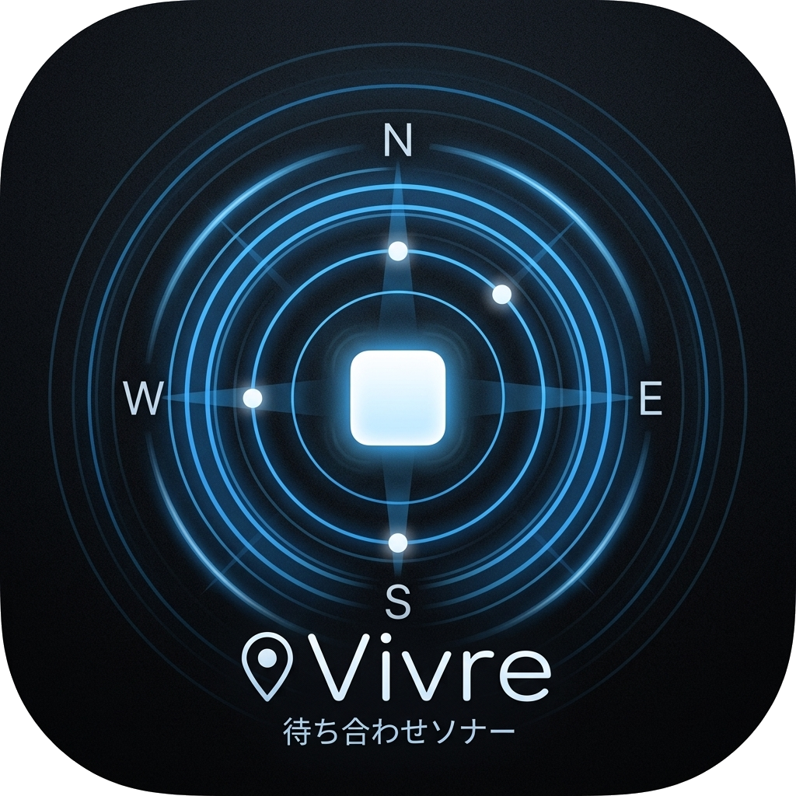

0
人があなたを追跡中
---
km
相手の位置を探しています...
位置情報を停止するには「共有を終了」してください。アプリを終了（キル）しても数分間、相手に位置が表示される場合があります。

用途に合わせて選んでください
共有されたビブルカード（番号）を入力
集合場所となる人が「ビブルカードを発行」し、表示された6桁の番号を仲間に伝えます。
向かう人は「ビブルカードを受け取る」から、教えてもらった番号を入力して接続します。
向かう人は画面に現れる「矢印」の方向へ進むだけで、仲間の場所に辿り着けます。
複数の仲間が、発行した1人の場所へ集まる際に使用します。お祭りやイベントでの集合に最適です。
1対1で、お互いの位置をリアルタイムに確認し合います。動きながらの合流に便利です。
・共有を確実に止めるには、画面内の「共有を終了（または終了）」ボタンを押してください。
・万が一アプリを強制終了（キル）した場合でも、通信が途切れて数分後には自動的に共有が解除されるのでご安心ください。
人があなたを追跡中
相手の位置を探しています...
集合のため、このビブルカード（番号）を仲間に伝えてください。
位置情報を停止するには「共有を終了」してください。アプリを終了（キル）しても数分間、相手に位置が表示される場合があります。
相手の位置を探しています...
集合のため、このビブルカード（番号）を仲間に伝えてください。
位置情報を停止するには「終了」してください。アプリを終了（キル）しても数分間、相手に位置が表示される場合があります。
（共有が終了しました）
新しいバージョンがあります。
最新版にアップデートして、より快適に使いましょう！